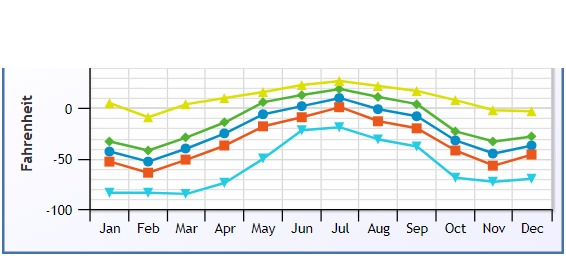

Climate
The average temperature for the year in Eismitte is -22.0°F (-30°C). The warmest month, on average, is July with an average temperature of 10.0°F (-12.2°C). The coolest month on average is February, with an average temperature of -53.0°F (-47.2°C). The highest recorded temperature in Eismitte is 27.0°F (-2.8°C), which was recorded in July. The lowest recorded temperature in Eismitte is -85.0°F (-65°C), which was recorded in March. The average amount of precipitation for the year in Eismitte is 4.3" (109.2 mm). The month with the most precipitation on average is December with 1.0" (25.4 mm) of precipitation. The month with the least precipitation on average is May with an average of 0.1" (2.5 mm).
